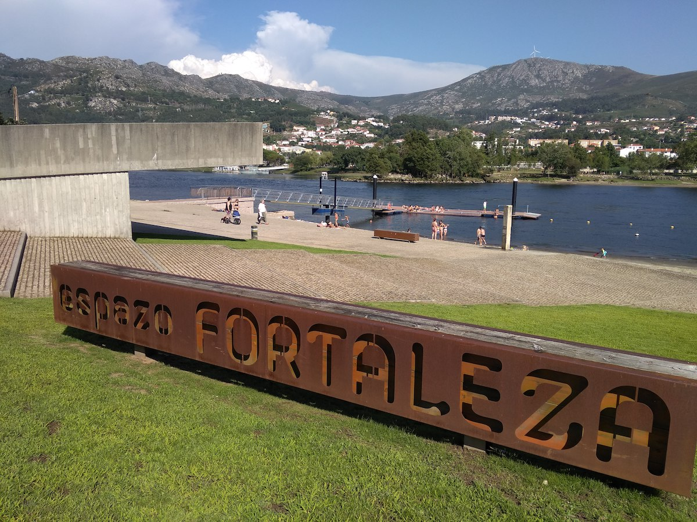

Goián pertence á comarca do Baixo Miño, situada no extremo suroeste de Galiza. Esta zona está constituída xeoloxicamente por aliñacións montañosas que alternan granitos e xistos paleozoicos, e a elas acaróanse tres terrazas cuaternarias que descenden ata o actual leito do río Miño[3].
Preto do Miño aínda quedan terreos enlamados lindeiros coa veiga chamada da Lamamá. Tamén ó sur da antiga parroquia de Tollo hai terreos enchoupados, de feito este topónimo de orixe celta é un sinónimo de "barreira". Aquelas terrazas foron asento durante o Plistoceno dunha poboación que posuía unha cultura paleolítica, e da que quedaron grande cantidade de instrumentos tallados en cuarcita abbevillense e principalmente acheuliano. Tamén hai algún petróglifo, que parecen ser da Idade de Bronce[3] e restos de varios castros: San Roque, Atalaia, Soutelo, Tollo.
Así mesmo atopáronse restos romanos na beira da serra Argallo, como anacos de tégulas, muíños de man e restos dos alicerces dun muro relacionados quizais coas explotacións mineiras de estaño, pola cantidade de calicatas existentes próximas ó lugar dos achados. Tamén é moi posible que o camiño real que atravesaba a parroquia de Tollo ata o século XIX tivera a súa orixe nunha vía romana.

| Nombre del lugar | Dirección |
|---|---|
| Fortaleza de Goián | 36750 Goián, Pontevedra |
| Igrexa de San Cristovo | Praza Pintor Antonio Fernandez, 4 |